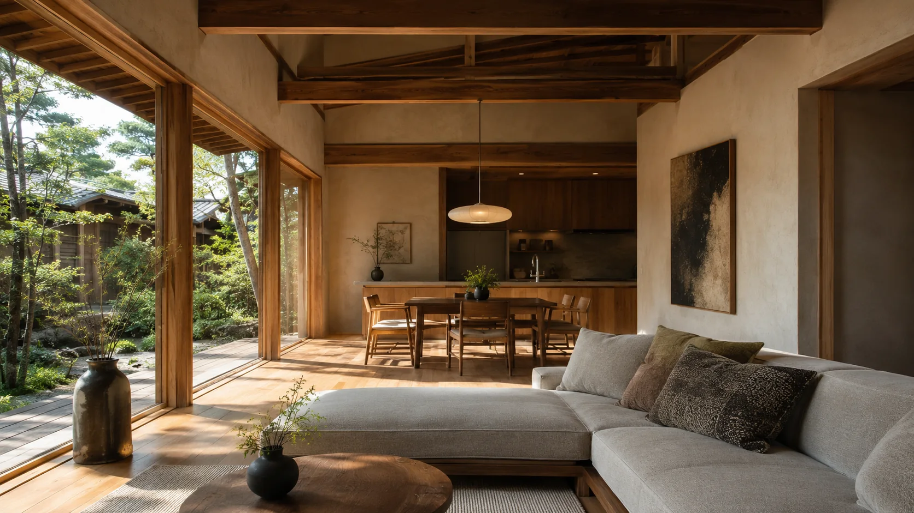
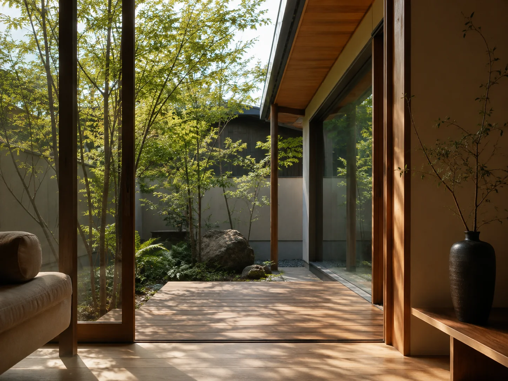
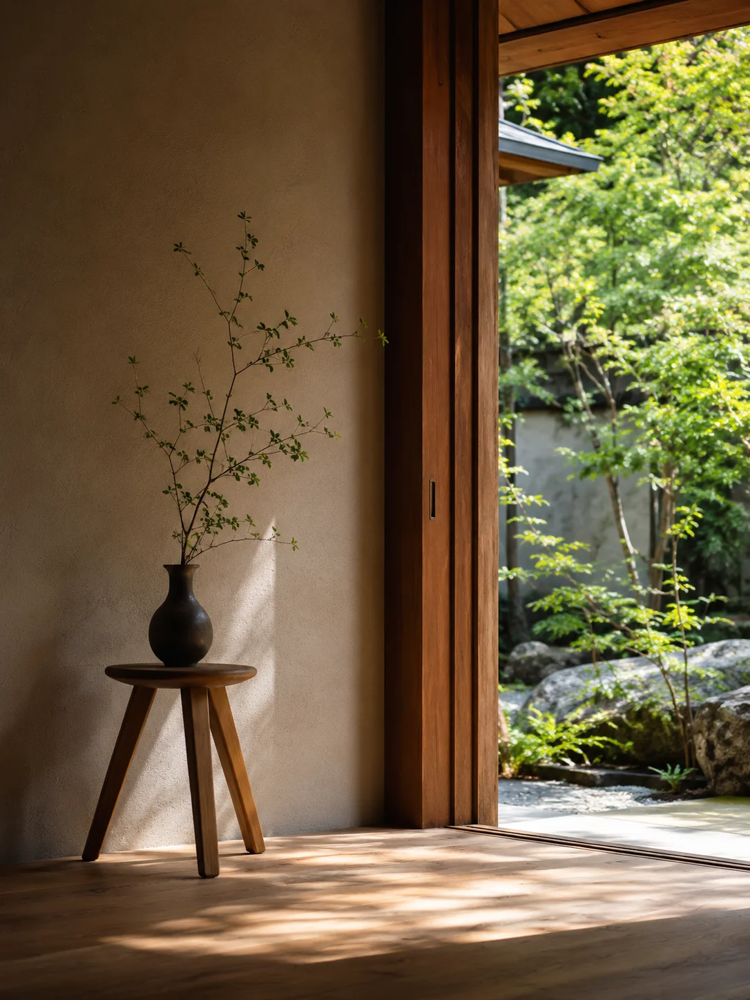
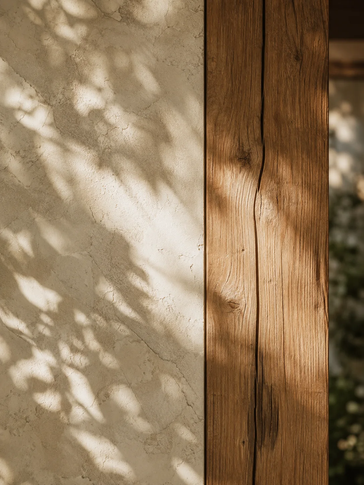
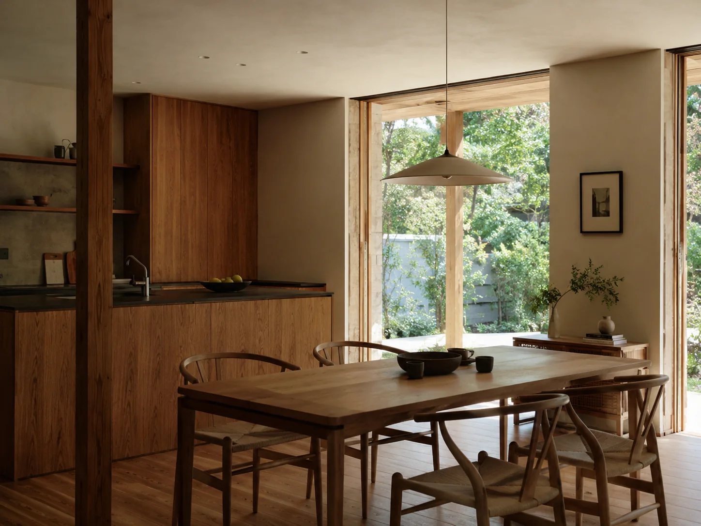
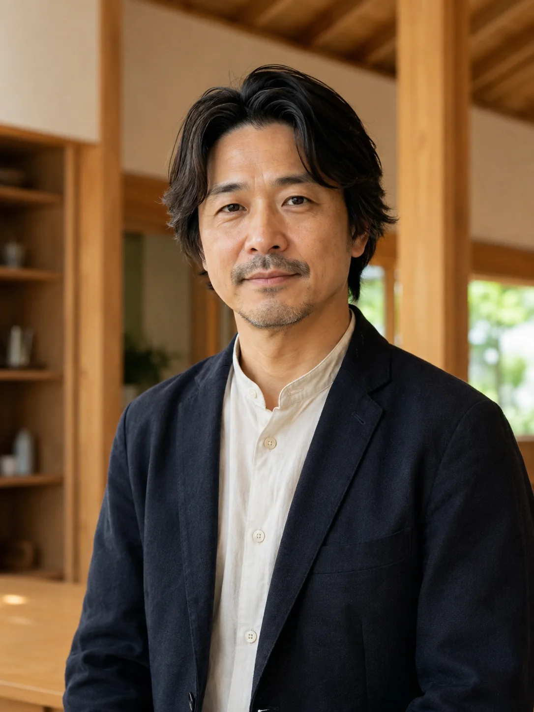

CONCEPT
コンセプト
百年、育つ家。
無垢材や漆喰などの自然素材と、
確かな性能で、家族の時間を静かに育てていく。
KURAHAUSは、30年後も、その先も、
価値が残る家をつくります。
OUR NAME
蔵という名前について
「蔵」には、
大切なものを守り、育み、
次の世代へつなぐという意味があります。
日本の風土、
時を超えて残り、使い継がれてきました。
KURAHAUSも、
そんな存在でありたいと願い、
この名前をつけました。



MATERIALS
素材が古びない家は、
暮らしが古びない
無垢材や漆喰、土や石といった自然素材は、
使い込むほどに味わいを増し、
美しい経年変化を生み出します。
私たちは、その素材が持つ未来の力を
引き出す設計と施工によって、心地よく、
長く住み継げる家をつくります。
PERFORMANCE
心地よさを、
数値でも裏づける
断熱性・気密性・耐震性など、
目に見えない性能にも妥協しません。
自然素材の心地よさを活かすために、
国の基準を上回る高い性能を確保し、
快適で安心な暮らしを数値でも裏づけます。

- UA値 0.34
- HEAT20 G2相当
- C値 0.5以下
- 全棟気密測定
- 耐震等級 3
- 許容応力度計算
OUR PROMISE
私たちがつくらない家
- 01
使い捨ての家
短い期間で建て替えることを前提とした、耐久性やメンテナンス性を軽視した家はつくりません。
- 02
過剰なデザインの家
奇抜さや見栄えだけを追うのではなく、暮らしに寄り添い、飽きのこないデザインを大切にします。
- 03
価格だけの家
目先の価格だけでは見えない、長く住み継ぐことを見据えた価値を提供します。

代表メッセージ
30年後に、
直しながら住み継げる家を
家は、完成した瞬間がゴールではありません。
30年後、子や孫の世代に受け継がれ、
直しながら豊かに住み継がれていくこと。
それが、私たちが考える本当の家づくりです。
KURAHAUSは、これからも変わらず、
家族の時間に寄り添う家をつくり続けます。
代表取締役 蔵本 直人